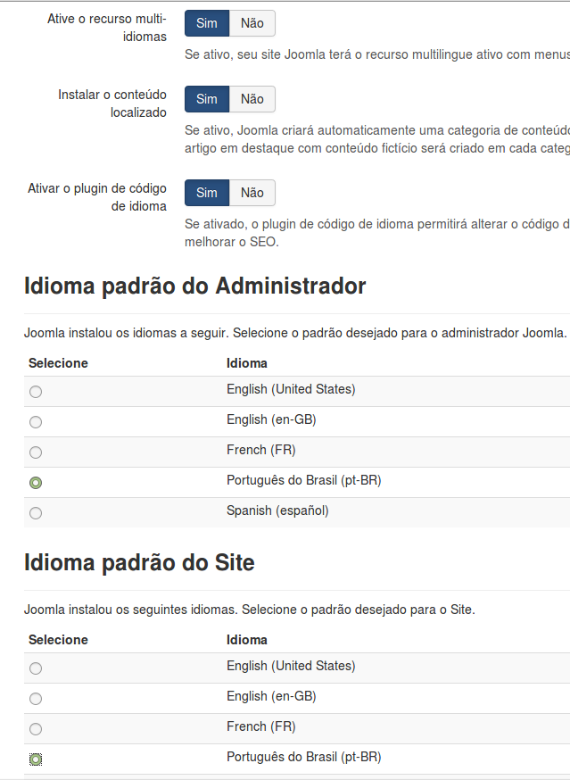
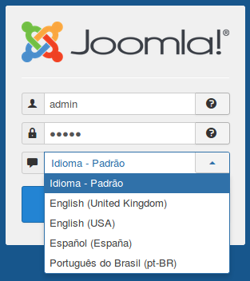
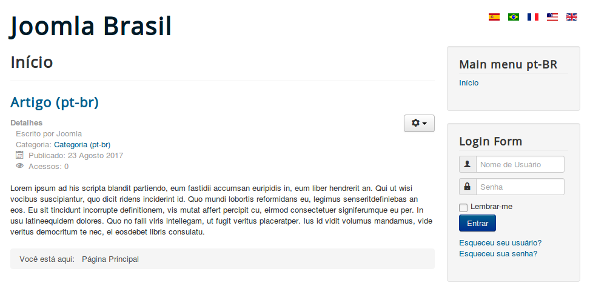
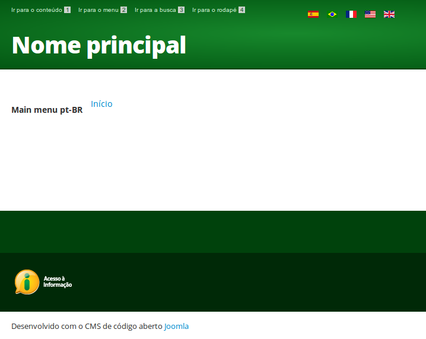
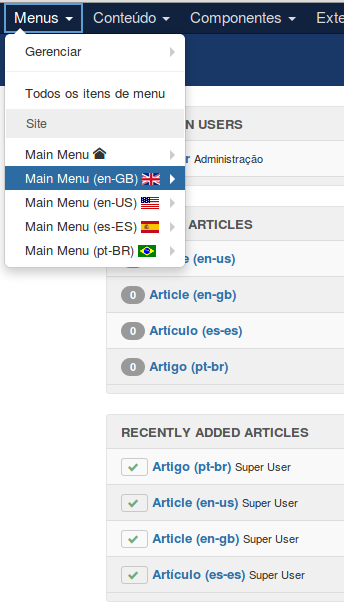
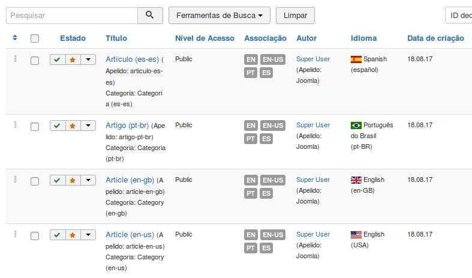
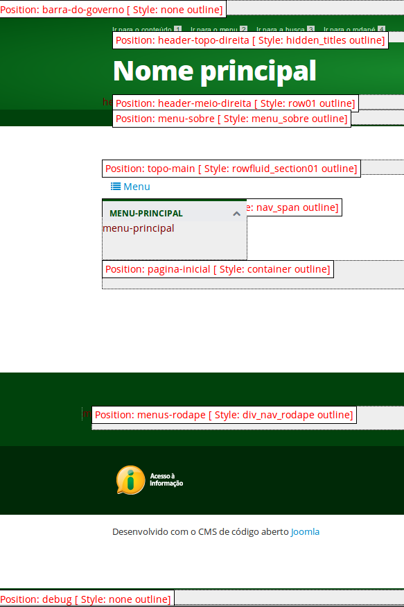

Implementação do Template Padrão do Governo num portal com Joomla 3.7.5 multilanguage
Como o template padrão do governo não tem suporte a multilanguage, instalarei o Joomla com suporte a multilanguage e depois instalerei o tempale padrão e mostrarei o caminho das pedras para se instalar as demais extensões.
Este projeto visa instalar o Joomla 3.7.5 com suporte a multilanguage
Depois instalar o template joomlagov e torná-lo o default atribuindo-lhe todos os itens de menu.
Instalar paralelamente o joomlagov com o quickstart para que veja que extensões ele instala
Então instalar cada uma das extensões existentes no joomlagov no Joomla multilanguage.
Download do Joomla
https://downloads.joomla.org/
Instalação
Instalarei na pasta joomlagov_ml
Lembrar de implementar multilanguage escolhendo a opção de nenhum conteúdo de exemplo e configurando as Etapas Extras: instalar idiomas.
Instalei os seguintes idiomas extras: English US, Francês, Português Brasil e Spanish
Ativei o recurso de multi-idiomas
Ativei o plugin de código de idiomas
E tornei Português do Brasil o default do site e do adminisrtator.
Veja esta tela que capturei na instalação:

Ao finalizar a instalação acessei o form de login do administrator já deu para ver todos os idiomas instalados.

Ao exibir o site já aparecem as 5 bandeirinhas.

Instalar Template Padrão do Governo Brasileiro
Agora instalarei o template isolado que encontra-se em meu projeto do GitHub:
https://github.com/ribafs/template-govbr
E o tornarei o default além de atribuir todos os itens de menu ao mesmo.
Para entender melhor como foi criado o template e seu funcionamento a equipe criou alguns documentos:
https://github.com/joomlagovbr/documentacao/tree/master/pdf
Mudei o módulo Language Switcher para a posição header-topo-direita.
Mudei a posição do Main menu pt-br para - topo-main
Veja como ficou sendo o default:

Já podemos ver que ele criou um artigo para cada idioma, um menu para cada idioma e habilitou as extensões necessárias: plugins e módulo.

Veja os artigos criados

Instalei o módulo barra do governo:
https://github.com/joomlagovbr/barra-do-governo
Setei sua posição para: barra-do-governo
No site do projeto ( https://github.com/joomlagovbr/ ) existe outra extensão a ser instalada, que é a agenda de autoridades.
https://github.com/joomlagovbr/agenda-de-autoridades
E assim se vai instalando todas as extensões que existem no projeto original.
Existem muitos menus e itens de menus, artigos de teste, componentes, etc.
As extensões a serem instaladas depende de cada órgão.
Aqui onde trabalho temos a iCagenda, Phoca Download, eXtplorer, ChronoForms, etc.
Ativar o mod_rewrite
Sistema - Configuração Global
Usar mod_rewrite do Apache - Sim
Salvar
E renomear o arquivo htaccess.txt para .htaccess (encontra-se no raiz do site).
Ativar a exibição dos módulos do tempalte na página do site
Extensões - Temas
Opções - Visualização de Posições de Módulos - Ativado
Então abrir o site assim:
http://localhost/joomlagov_ml/pt/index.php?tp=1
Veja as posições exibidas no site:

Com o recurso acima verificamos sempre que instalar um novo módulo, em qual posição ele deve ficar.
Posicionar módulos no template padrão:
Language Switcher - header-topo-direita
Instalar o quickstart do projeto do template padrão para comparações
Download
https://github.com/joomlagovbr/joomla-3.x
Lembre que o pacote acima já contém o Joomla 3.7.4, o template padrão instalado e muitas outras extensões úteis para órgãos do governo brasileiro.
Instalarei na pasta joomlagov_orig
Uma instalação padrão, inclusive usando o conteúdo de exemplo desenvolvido pela equipe do Joomla Calango, que foi quem criou este template. Mantenha selecionado:
Dados de exemplo do portal padrão
Veja o tutorial com ajustes iniciais para corrigir alguns erros encontrados nesta versão:
http://ribafs.org/portal/joomla-3/extensoes/181-template-padrao-do-governo-ajustes